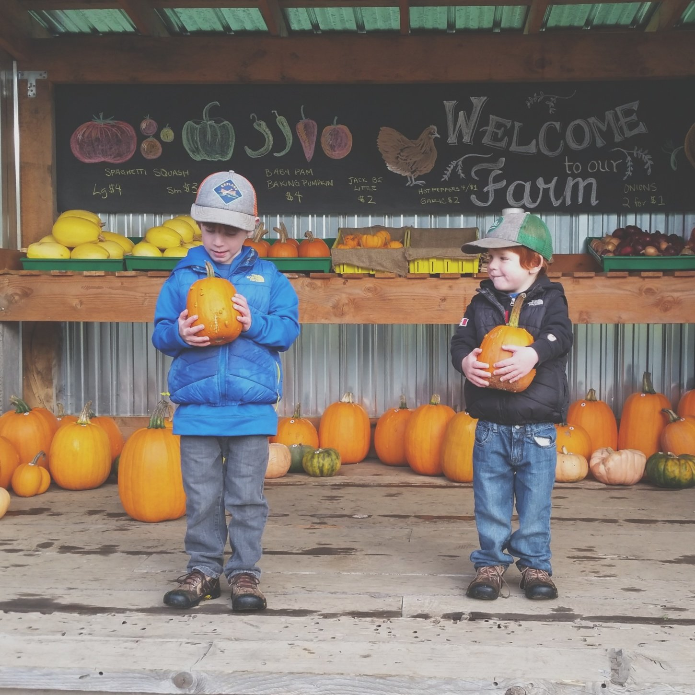
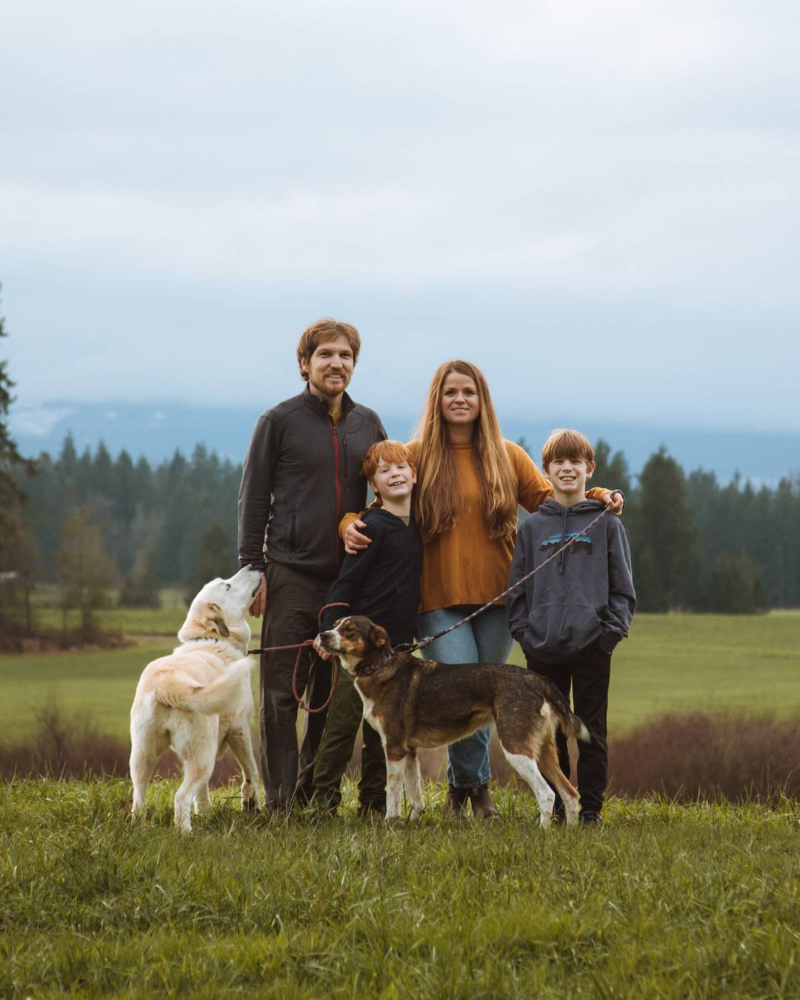
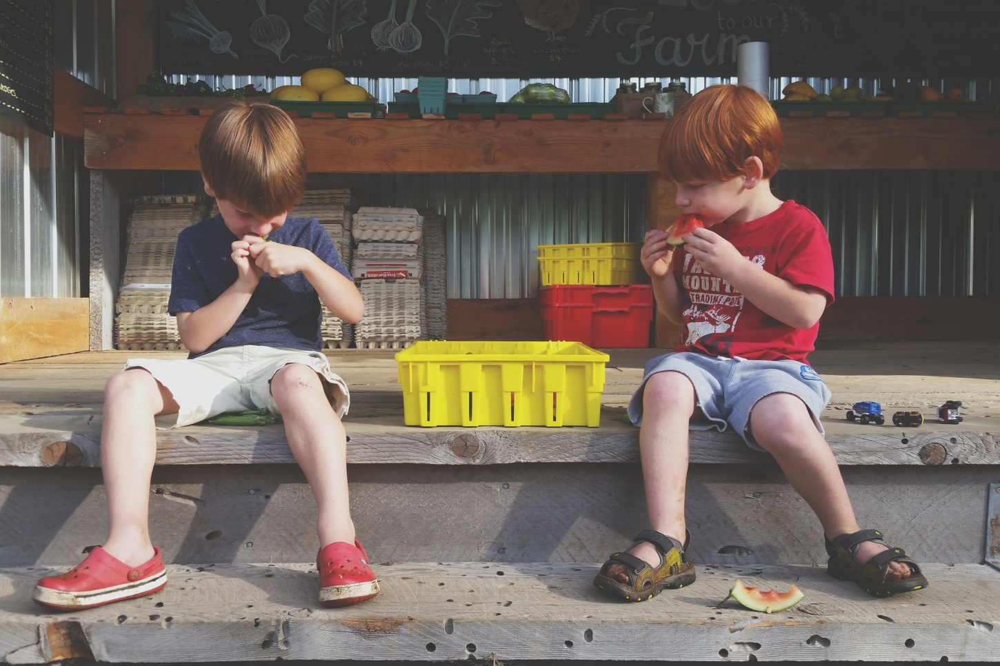

Kehler Vegetable Company
Kehler Vegetable Company
Kehler Vegetable Company
Kehler Vegetable Company
Our farm runs on a best practice system, we use a combination of management that ensures our produce is the highest quality possible. We are not currently certified organic but we do grow all produce and vegetables organically. Through the use of mechanical and cultural management we keep our farm pests under control. Black plastic mulch, flame weeders, roto-tiller and old fashion weeding techniques are used to keep encroaching weeds down. Row covers help to keep insect pests out of our susceptible crops and a good crop rotation plan ensures that we are keeping pests at a minimum from season to season. Fertility is managed here by adding well composted cattle manure as well as our own manure produced by our laying hen flock. Supplemental organic fertilizer is added as needed to our drip irrigation system throughout the season.
  At Kehler Vegetable Company, we offer fresh, flavorful produce grown sustainably in the Comox Valley. Our vegetables, berries, and eggs are harvested at peak ripeness, ensuring maximum flavor and nutrition. Supporting us means choosing local, high-quality food while promoting sustainable farming. Visit us today and taste the difference of truly fresh produce.
At Kehler Farm, our berries are lovingly grown in the fertile soils of the Comox Valley. From sweet strawberries to juicy blueberries, each berry is handpicked at the peak of ripeness to ensure maximum flavor and freshness. Packed with vitamins and antioxidants, our berries are the perfect addition to any meal or snack. Support local, sustainable farming by choosing our fresh, seasonal berries—taste the difference in every bite.
At Kehler Farm, we take pride in our non-GMO eggs, laid by hens raised in a natural, healthy environment. Our chickens enjoy a diet free from genetically modified feed, ensuring that every egg is as pure and nutritious as nature intended. Rich in protein and flavor, our eggs are perfect for any dish. By choosing our non-GMO eggs, you’re supporting sustainable farming practices and enjoying a healthier, more wholesome product. Taste the difference with every egg from Kehler Farm.